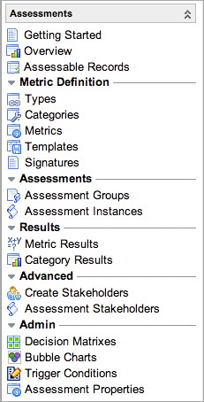

Assessments
| |
Note: This article applies to Fuji. For more current information, see Assessments at http://docs.servicenow.com
The Wiki page is no longer being updated. Please refer to http://docs.servicenow.com for the latest product documentation. |
Contents
1 Overview
Use assessments to evaluate, score, and rank records from any table in the system. For example, you can assess projects that executives want to evaluate for effective management, or rate and compare a vendor's goods and services. Use assessments to send custom questionnaires to selected users or write scripts that query the database directly. You can then compare assessment results for the records using unique graphical views designed to highlight key performance information. Share an assessment between ServiceNow instances by exporting and importing it as an XML file (starting with the Eureka release).
Assessments are available starting with the Dublin release and are enabled in the base system starting with the Eureka release.
2 Key Terms
- Metric type: A metric type defines a set of records you want to evaluate, such as vendors, projects, or employees.
- Assessable record: An assessable record links a record you want to evaluate, such as the company record for Amazon or the user record for a sales representative, to a metric type, such as vendors or employees. You define sets of assessable records when you create metric types.
- Metric category: A metric category represents a theme for evaluating assessable records. Categories contain one or more individual metrics, which define specific traits or values that comprise the theme. Examples of categories include overall vendor performance, or quality of delivery services. You can also set filter conditions that control which assessable records to evaluate for the metrics in a category.
- Metric: A metric is a trait or value used to evaluate assessable records. A metric can measure subjective values in an assessment questionnaire, or gather objective values in a database query run by a script. Examples of metrics include perceived courtesy of sales representatives, or number of incidents per vendor.
- Category user: A category user is a person who knows about a specific category. One person can be a category user for multiple categories. Examples of category users include a vendor manager who oversees all purchasing operations, or a supervisor of a sales team.
- Stakeholder: A stakeholder is a category user who knows about a specific assessable record. Examples of stakeholders include a vendor manager who coordinates purchases from Amazon, or a supervisor of a sales team who manages a specific employee.
- Assessment instance: An assessment instance represents one assessment questionnaire assigned to one user. The system generates a new assessment instance for each assigned user when:
- The assessment generation scheduled job runs.
- An assessment administrator creates an on-demand assessment.
- Scorecard: A scorecard provides a visual breakdown of an assessable record's performance, based on assessment results. Use scorecards to view a variety of data summaries for one assessable record and to compare the ratings with those of other assessable records.
- Decision matrix: A decision matrix is a graph with two axes that plots the assessment results for multiple assessable records. Use decision matrixes to determine the relative standing of assessable records in selected categories.
- Bubble chart: A bubble chart is a graph with three axes that plots the assessment results for multiple assessable records. Use bubble charts to determine the relative standing of assessable records in selected categories, with an emphasis on one category. Available starting with the Eureka release.
3 Assessment Process
Determine your objectives before you set up assessments. Decide which sets of records in the system you want to assess, which themes you are interested in, and which traits you want to measure. Consider your organization's options for obtaining the data you want to compare. If you intend to use assessment questionnaires, consider which people can answer the questions you want to ask. Before you begin, assign the assessment_admin role and any other necessary roles to the appropriate users in your organization. The administrative tasks for creating and maintaining assessments require this role.
3.1 Schedule Types
You can schedule assessments for preconfigured users or send them to any user on demand. On-demand assessments require less setup. Scheduled assessments define users, or stakeholders, who have specific knowledge of the records being evaluated, and automatically send out assessment questionnaires to those users at scheduled intervals. The best practice is to configure an on-demand assessment first to familiarize yourself with the process and test your questionnaires. When you are satisfied with your categories and questions, reconfigure for a scheduled assessment. These configuration paths are the easiest for both assessment types. Refer to Key Terms for definitions of the terms used in these procedures.
3.1.1 On-Demand Assessments
Use on-demand assessments to familiarize yourself with the basic assessment process and test your questionnaires using minimal configuration. Select the assessable records to evaluate, create the categories and questions, and then assign an assessment to a user in the system. Pre-configured stakeholders are not used for on-demand assessments.
- Create a metric type and set the Schedule type to On demand to allow for testing of your assessment configuration.
- Generate the assessable records for the metric type you created.
- Create the metric categories required to evaluate the assessable records selected.
- Create one or more assessment questions, or metrics, for each category.
- Publish the assessment (starting with the Eureka release).
- Perform an on-demand assessment to test your categories and metrics.
- Analyze the assessment ratings in an assessment scorecard or decision matrix.
3.1.2 Scheduled Assessments
After you have evaluated your questionnaires using on-demand assessments, edit your categories and metrics as needed, reset your metric type record, and select the users who are qualified to evaluate the assessable records.
- Open the metric type you created for the on-demand assessment and set the Schedule type to Scheduled.
- Make sure the categories and metrics you created for the on-demand assessment are correct.
- Create category users who have special knowledge of your categories.
- Create stakeholders by associating category users to specific assessable records.
- Set a schedule for automatic assessment generation or generate the assessment manually. This procedure must be done by a system administrator.
- Configure email notifications to remind users of their assigned assessments and to report to managers when an employee misses an assessment deadline.
- Analyze the assessment ratings in an assessment scorecard or decision matrix.
4 Domain Separation
Assessments support domain separation and requires that all assessable records be in the same domain as the elements required to perform the assessment. A metric type in the global domain can only assess records in the global domain. The categories, metrics, and users associated with that type must all be in the same domain. To assess records in a different domain, the type, categories, and metrics must be created in that domain.
5 Roles
The Assessments application uses the following roles. No role is required to take assessment questionnaires that are assigned to you.
| Role Title | Role Name | Description |
|---|---|---|
| Assessment administrator | assessment_admin | Assessment administrators set up assessments. They know which records to evaluate, the criteria on which to evaluate the records, and who to assign assessments to.
Note: By default, users with the assessment_admin role have limited system rights and might not have access to all source records to assess. When planning assessments, grant additional roles to assessment administrators as needed. For example, to create and manage vendor assessments, the assessment administrator must also have the vendor_manager role, which grants access to the Company table and other relevant tables. |
| ITIL user | itil | ITIL users perform basic technician operations in the system. In the Assessments application, they have read access to the Assessable Record table. |
| Administrator | admin | Administrators have access to all aspects of the assessment process. Only administrators can set up assessment schedules. |
6 Menus and Modules
The Assessments application menu contains the following modules:
Under the Self-Service menu:
| |
|  | Under the Assessments menu:
|
{kind=link}
{kind=link}
7 Activating Assessments
The Assessment plugin is enabled by default for all instances running Eureka or later releases. For instances running the Dublin release, an administrator can activate the plugin as follows:
| Click the plus to expand instructions for activating a plugin. |
|---|
|
If you have the admin role, use the following steps to activate the plugin.
|
8 Enhancements
8.1 Fuji
- An evaluation type called Attestation is available for metric types. An attestation is a type of survey used by the Governance, Risk, and Compliance (GRC) application to evaluate an organization's compliance with its policies. Attestations are created in GRC but can be customized in assessment metric and category records.
- The Signature module allows the assessment administrator to include an assertion on assessments, surveys, or GRC attestations that contains requirements, admonitions, or policies related to the questions. Recipients can then be required to certify that they have read and complied with the expectations by selecting a check box or providing a full signature. A table called Signature [asmt_signature] stores the data.
- A field called Allow retake on the Assessment Metric Type form allows a user to modify a completed assessment, survey, quiz, or attestation. Completed questionnaires configured for retake are available for modification in the user's queue until the submission due date.
8.2 Eureka
- The assessment feature is available in the base system for all Eureka instances.
- An enhanced survey management tool, which is built on the assessment engine, replaces legacy surveys.
- Bubble charts provide an enhanced way to view assessment results.
- Various changes to the assessment questionnaire improve usability.
- The assessment API is significantly enhanced to run more efficiently and provide extended capabilities.
- Assessments can be exported and imported as XML files.
- Trigger conditions enable you to send assessments automatically when certain actions occur.
- Properties enable the customization of assessment appearance.
- Metric types must be published before you can generate assessments. The State field on the Assessment Metric Type form indicates whether the metric type is published.
- On-demand assessments can be generated for multiple assessable records.
- A progress bar appears in the Assign Assessor dialog box when you assign an on-demand assessment to someone.
- The Scale factor field on the Assessment Metric Type form enables the definition of a custom numerical scale for a metric type's assessment results.
- The Active field on the Assessment Metric Type form allows the retirement or activation of assessments.
- The Introduction and End note fields on the Assessment Metric Type form allow the addition of introductory and closing content to assessment questionnaires. Note that these fields must be added by configuring the form.
- The Randomize answers field on the Assessment Metric form provides the option to present the answer options for that question in a random order on questionnaires.
- The Depends on and Display when fields on the Assessment Metric form allow the creation of conditional questions.
- Additional data types are available: Checkbox, Date, Date/Time, String, Template, Yes/No.
- The Scale data type is renamed Likert Scale.
- Changes related to metric minimum and maximum values enhance the user experience:
- Validation mechanisms are greatly improved on assessment questionnaires and for the Min and Max fields on the Assessment Metric form.
- The Min and Max fields are read-only and set automatically if the metric data type is Choice or Likert Scale.
- The system prevents, for a given metric or metric template, the creation of more than one metric definition or metric template definition with the same Value.
- The Getting Started module opens a ServiceNow Wiki page that contains helpful information about assessments.